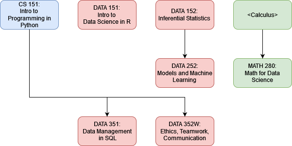

BACHELORS OF SCIENCE
Five (5) courses in Data Science, one (1) course in Computer Science, one course in Mathematics, and three electives. Electives may be courses with either a DATA or CS prefix, pre-approved courses from other departments, or courses approved in consultation with your major advisor.- CS 151 : Intro to Programming in Python
- DATA 151 : Intro to Data Science in R
- Statistics Requirement, choose one of
- DATA 152 : Inferential Statisticss
- MATH 138 : Introduction to Applied Statistics
- Machine Learning Requirement, choose one of
- DATA 252 : Models and Machine Learning
- CS__ 475 : Machine Learning*
- MATH 280 : Math for Data Science*
- DATA 351 : Data Management with SQL
- DATA 352W: Ethics, Teamwork, Communications
*Denotes classes with requirements that do not count toward the major.
Dependency Graph
Notes
CS 475 requires CS 370 which requires CS 151. MATH 280 requires calculus credit or instructor consent.